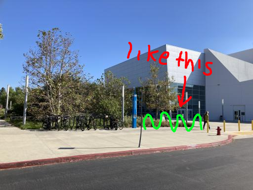
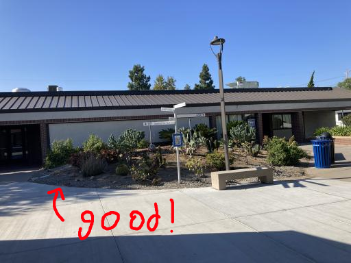

Hello! My name is Charles Victorio and I'm a first year Computer Science major at IVC. If I'm not at school or work, I'm probably programming, working out, learning about politics, biking, or watching The Sopranos. I'm running for Senate because there are a lot of small, incremental changes we could make to this school to make it a lot better. Vote for me. 😎 🤙
Give more resources to the Health and Wellness Center and increase the amount of free therapy sessions.
Build more wave-style bike racks around campus.
Put more solar panels on rooftops. This will pay for itself over time.
Expand the Free OC Bus Pass to teachers and staff. Also, make it so that you have to opt in to get it, so the school doesn't spend money for people who don't use it. That way, you increase access while reducing costs at the same time.
Instead of grass, start growing more biodiverse, native plants that don't need as much water.
Advocate for the state government to broaden eligibility for the Promise Program. Out-of-state and international students are excluded from free tuition and other benefits, even though they put in equal work and face equal (or greater) hardships as California residents do.
Run a Tor exit node. Journalists and whistleblowers in authoritarian countries rely on The Tor Project to securely communicate without surveillance. Ordinary people don't have the resources to set up an exit node — but IVC does. IVC should support freedom of expression and the right to privacy by helping to maintain Tor. Together, we can let IVC join the ranks of the many universities around the world that already do this.
Work with the City of Irvine and Manassero Farms to put a sidewalk on Jeffrey.